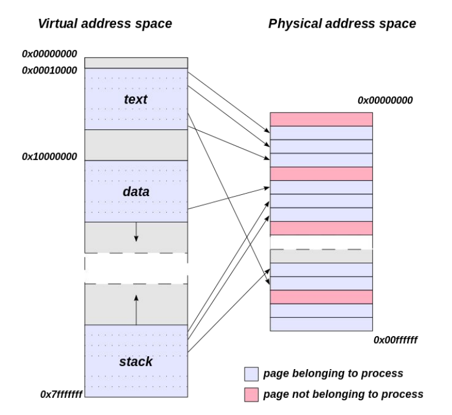
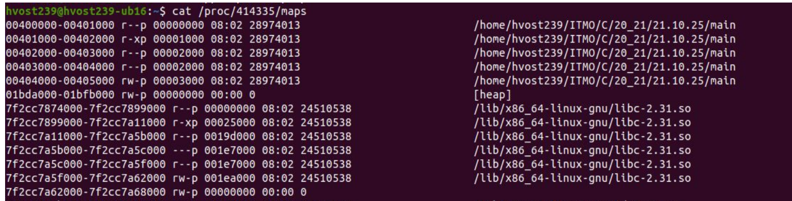
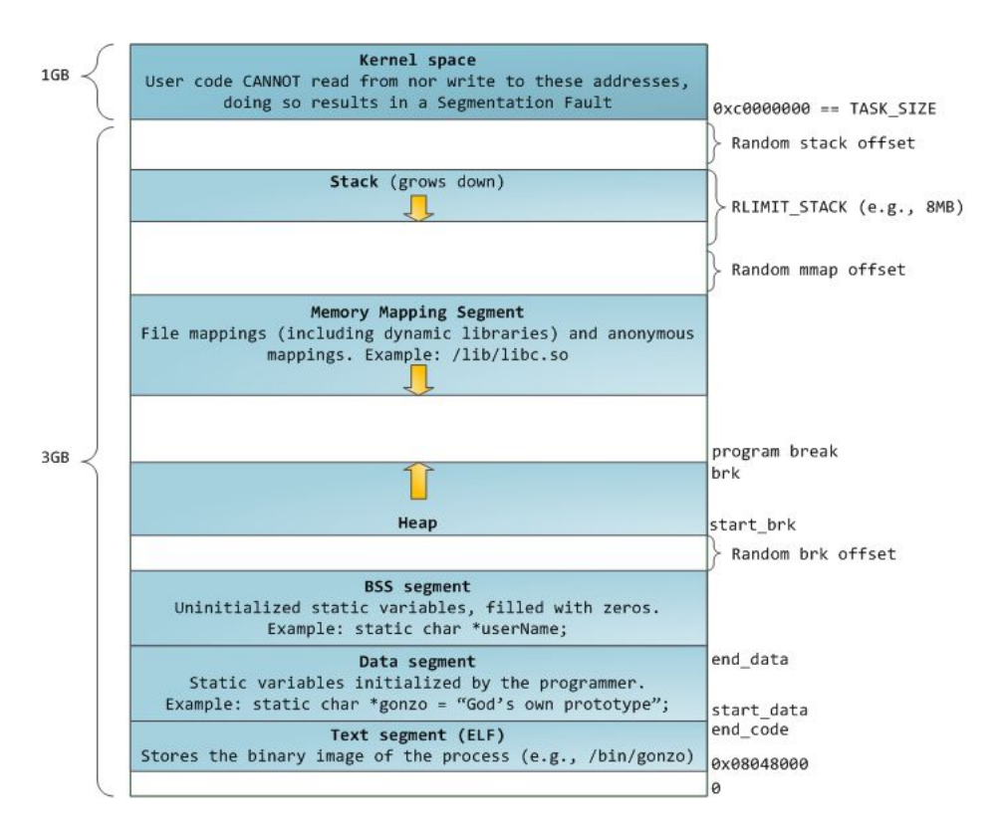
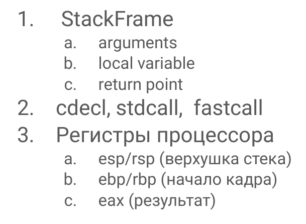
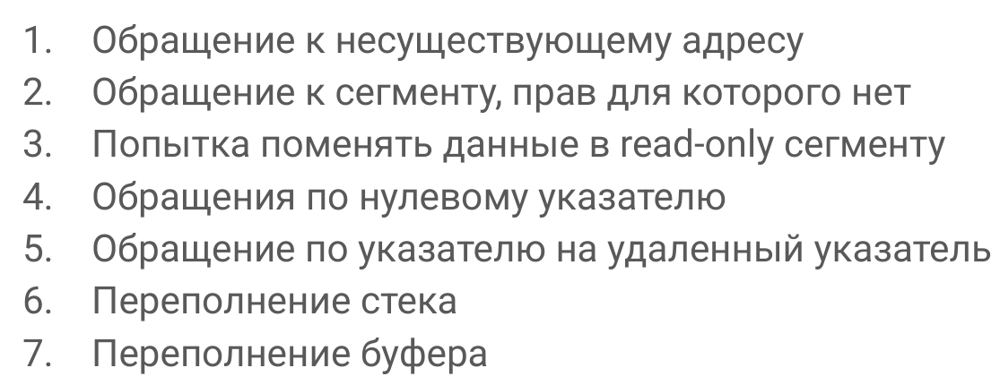

Представление чисел и работа с памятью
Как данные размещаются в объектах и когда их можно использовать.
Числа в памяти PC
LW1 : Цифры хранятся в памяти компьютера в виде двоичного кода, представляющего собой последовательности нулей и единиц Отрицательные числа хранятся в памяти компьютера с помощью дополнительного кода, который позволяет заменить вычитание на сложение. Для этого сначала получают прямой код положительного числа, затем инвертируют все биты (получая обратный код) и прибавляют к нему единицу. Старший бит в таком представлении становится знаковым: 0 — для положительных, 1 — для отрицательных чисел.
Работа с памятью
На одном ядре операционная система переключает выполнение между задачами, например редактором и музыкальным проигрывателем. Планировщик может использовать аппаратные прерывания таймера. Длина кванта зависит от ОС и политики планирования.
Процесс - программа и ее ресурсы запущенные в операционной системе
У процесса есть независимое адресное пространство
У потоков СТЕК - область памяти для потока (представь в виде тарелок только сверху ) pop push top

Виртуальные адреса отображаются на страницы физической памяти. Отображённые области могут иметь промежутки, а соседние виртуальные страницы могут находиться в разных местах физической памяти.
Операционная система изолирует адресные пространства процессов. Для обмена данными процессы используют контролируемые механизмы, например общую память.

Подкачка позволяет выгружать часть страниц памяти на диск и загружать их по требованию.
Kernel Space - ядро системы User Space - пользовательское пространство
Segment - адреса с до мапятся в адрес на диске Сегмент описывает диапазон виртуальных адресов и его назначение, например отображение файла или область данных.

Стек вызовов хранит кадры активных функций. Доступный размер стека ограничен настройками платформы. Схема стека вызовов Heap - динамическая память или куча
- В отличии от стека позволяет создавать динамические структуры большого размера
- Управление жизнью объектов в куче “ручное”

Стек вызова

Функции работы с памятью StdLib.h
malloc
Если выделена память, она должна быть освобождена
Если программа потребляет память линейно, значит она не правильная
- malloc не гарантирует выделение памяти
- не забывать выставлять указатель в NULL после освобождения
- free(NULL) ничего не делает
#include <iostream>
#include <stdlib.h>
int main(void){
int* ar = (int*)malloc(100000);
std::cout << *ar << "\n";
free(ar);
return 0;
}Когда уместно использовать кучу
Уместно:
-
Большие или переменные по размеру структуры, которые не помещаются на стеке или размер известен только в рантайме (ввод
nот пользователя, чтение файла и т.п.). -
Время жизни данных дольше области видимости, например, объект создаётся в функции, а используется после её завершения.
-
Полиморфизм и фабрики — когда возвращаешь базовый интерфейс, а реальный тип решается во время выполнения (часто вместе с умными указателями).
-
Совместное владение или разделение данных между несколькими частями программы (используй
shared_ptr/weak_ptr). -
Избежать переполнения стека при глубокой рекурсии или огромных локальных структурах.
-
Контейнеры STL (внутри они используют кучу):
std::vector,std::string,std::mapи др.
Неуместно (или лучше избегать):
-
Маленькие, краткоживущие переменные, которые удобно положить на стек — проще, быстрее, безопаснее.
-
Ручной
new/deleteв современном C++ — предпочтительны RAII и контейнеры/умные указатели (std::unique_ptr,std::make_unique,std::vector). -
Когда владение неясно — это приводит к утечкам/двойному удалению. Если без явной причины нужен «сырой» указатель — скорее всего дизайн можно улучшить.
calloc
Тоже самое, что и malloc только выделяет k памяти
#include <iostream>
#include <stdlib.h>
int main(void){
int *a = (int *)malloc(3 * sizeof(int));
a = (int*)realloc(a, 5 * sizeof(int));
std::cout << a << "\n";
free(a);
return 0;
}new
new выделяет память и создаёт объект, вызывая его конструктор. malloc выделяет необработанную память.

Segmentation fault
